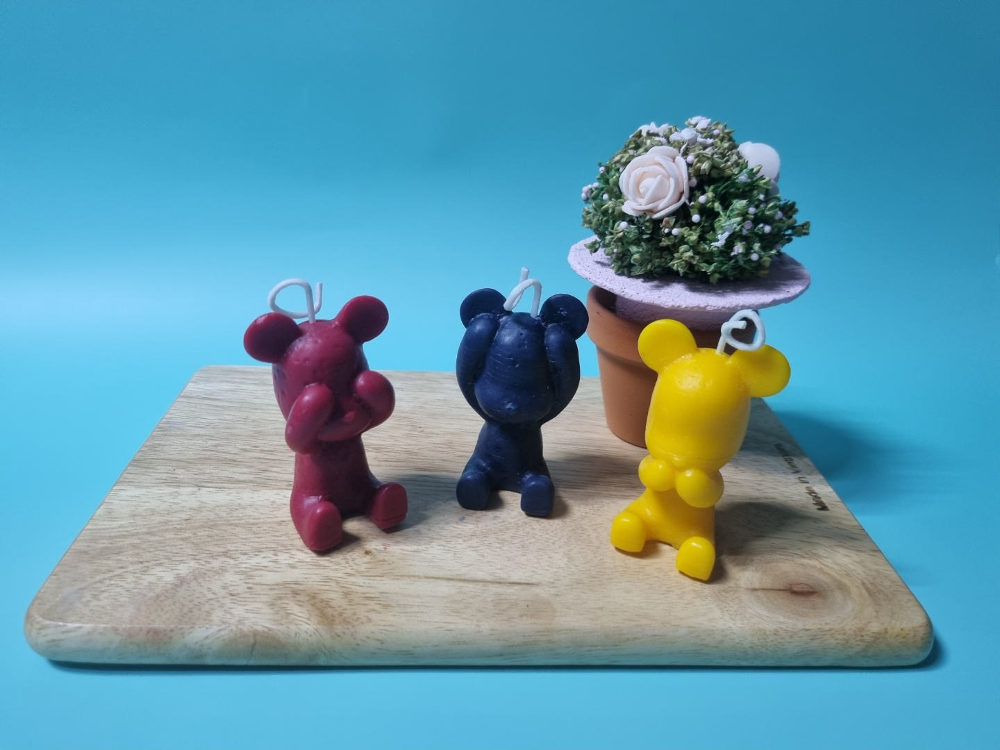

은은한 향기의 향초로 태우지 않아도 인테리어 소품으로 활용하기에 좋습니다.캔들의 사용법
캔들을 사용할 때에는 심지를 5mm정도로 자른 후 처음 태울 때 2시간 이상 켜 주어야합니다.
캔들은 꼭 평평한 곳에서 사용해야하고 바람이 부는곳에는 두지 않습니다. 반드시 받침나 접시 위에 놓고태워주세요 태우시는 1~2시간 정도 한번씩 환기를 꼭 시켜줍니다.
캔들의 불을 끌 때는 입으로 불어서 끄면 검은 그을음이 발생하니 물을 한 방울 떨어뜨리거나 윅디퍼, 쇠젓가락 등을 이용하여 심지를 촛농에 살짝 담가 불을 꺼줍니다.
그을음이 생겼을 경우 물티슈로 그을음을 닦아주며, 캔들을 사용하지 않을때는 뚜껑으로 덮어둡니다.